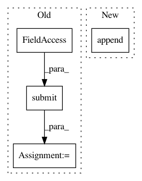

d85c87182a4eb2434bf3bd4d540217ce68125949,sos/sos_task.py,TaskEngine,submit_task,#TaskEngine#Any#,541
Before Change
if hasattr(env, "__task_notifier__"):
env.__task_notifier__(["new-status", task_id, "pending"])
t = concurrent.futures.ThreadPoolExecutor(max_workers=1)
self.pending_tasks[task_id] = t.submit(self.agent.prepare_task, task_id)
return "pending"
def summarize_status(self):
from collections import Counter
After Change
env.logger.info("{} ``re-execute completed``".format(task_id))
env.logger.info("{} ``queued``".format(task_id))
self.pending_tasks.append(task_id)
self.task_status[task_id] = "pending"
if hasattr(env, "__task_notifier__"):
env.__task_notifier__(["new-status", task_id, "pending"])
return "pending"
In pattern: SUPERPATTERN
Frequency: 3
Non-data size: 4
Instances
Project Name: vatlab/SoS
Commit Name: d85c87182a4eb2434bf3bd4d540217ce68125949
Time: 2017-04-07
Author: ben.bog@gmail.com
File Name: sos/sos_task.py
Class Name: TaskEngine
Method Name: submit_task
Project Name: analysiscenter/batchflow
Commit Name: af9280ba162009408b4bc6dbc0edfe94dc3911c5
Time: 2017-04-18
Author: rhudor@gmail.com
File Name: dataset/pipeline.py
Class Name: Pipeline
Method Name: run
Project Name: okfn-brasil/serenata-de-amor
Commit Name: e1d39a4c9158c9a9db1218cb5be9946152e2ca1b
Time: 2017-04-14
Author: marcus.rehm@gmail.com
File Name: src/fetch_cnpj_info.py
Class Name:
Method Name: